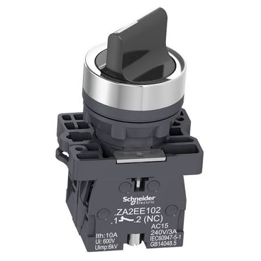

Chave Manopla (Retenção)
Chave seletora que mantém a posição selecionada, usada para alternar entre modos de operação (ex.: Manual/Automático).
Conceito e Aplicação
Diferente da botoeira, a chave manopla é uma chave de retenção: ao ser girada para uma posição, permanece nesse estado até que seja movida manualmente para outra. É muito usada para selecionar modos de operação de uma máquina.
- Posições fixas (2 ou 3 posições)
- Mantém o estado sem necessidade de pressão contínua
- Comum em seleção Manual / 0 / Automático
- Pode ter chave física para travar a seleção (segurança)

Informações Complementares
Funcionamento
Um mecanismo de came interno mantém os contatos fechados ou abertos de acordo com a posição girada, sem retorno automático.
Aplicações
Seleção de modo de operação de máquinas, escolha de sentido de giro de motores e comandos que precisam permanecer fixos por período prolongado.
Vantagens
Evita acionamentos acidentais, permite operação contínua sem pressão do operador e oferece clareza visual do estado selecionado.
Empresas
Alguns dos principais fabricantes que produzem este tipo de componente.
Multinacional alemã com portfólio amplo em automação industrial, forte em CLPs, IHMs e dispositivos de proteção elétrica.
Empresa brasileira, uma das maiores fabricantes mundiais de motores elétricos e componentes de comando e proteção para painéis.
Companhia francesa focada em gestão de energia e automação, com linha extensa de disjuntores, contatores e software industrial.